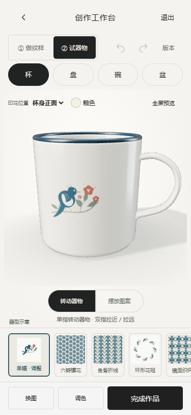
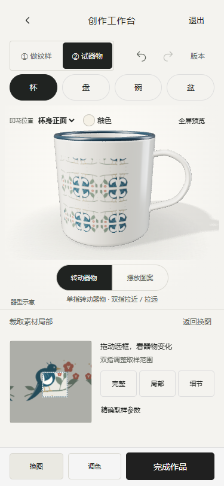

工作台：从可发现的第一步开始
2026-10-30 · 本地改进，没有发布到 GitHub。
本次先查看的官方演示
从 Repper 官方手机版页面确认以下视频，下载到本地研究目录后逐段抽帧查看。第一段以 0.5 秒间隔查看连续操作，其他两段以 2 秒间隔查看；没有把网页介绍当成实际操作视频。
另参考 官方 Quick Guide的拖动选区→选择排布→快照流程。未复制品牌、配色、素材或专有源码；没有声称完整复刻 Repper 的全部算法。
已落地
- 首屏直接显示“试一种排布”，八种缩略图都由当前纹样和设置实时绘制。点击应用、可撤销；返回后保持横向浏览位置。
- 素材→裁取局部：同屏拖动选框、双指改变取样范围，器物实时响应；取消触摸不保存，完整手势只记一次撤销。完整/局部/细节三个快捷范围。
- 六种配色使用当前纹样的真实预览，器物釉色单独调整。精细参数保留在下一层。
- 常驻素材、配色、存快照、更多四个工具入口。一键快照保存成功后才提示；底部可直接查看快照并切回。
- 原有杯/盘/碗/盆、器物手势、二维编辑、版本、下载及完成作品路径保留。
实际验证
- npm test：91/91；npm run build:cup、lint、build 通过。
- qa-live-workbench：八种结果卡片、选择/撤销、同屏取样、未松手的3D更新、双指范围、一次历史提交、快照恢复、配色与刷新恢复，通过。
- qa-workbench：取样、排布变体、六项效果、自选双色、版本对比恢复、PNG/SVG下载、3D贴图更新，通过。
- qa-mobile-focus：原有旋转/缩放、纹样摆放、四器型、刷新、全屏返回，通过。
- 构建后单文件导航与3D冒烟检查通过。375px、390px，以及320px/430px检查工具展开与保存可达性，无页面脚本异常。
以上为 Edge 手机模拟环境，使用真实 CDP 触摸事件；不是实体手机实测。设备GPU表现仍需真机确认。
本轮交互结果 · 单元测试 · 旧功能回归 · 手势回归
375px 页面


变更文件
运行及边界
打开本地工作台。如没有活动草稿，从共创进入。工程目录执行 $env:PORT=8879; npm start。本轮未接入或调用外部AI，模型仍为程序化示意，馆藏授权、多人云同步、馆方积分、工厂生产均未接入；本地数据只保存在当前浏览器。